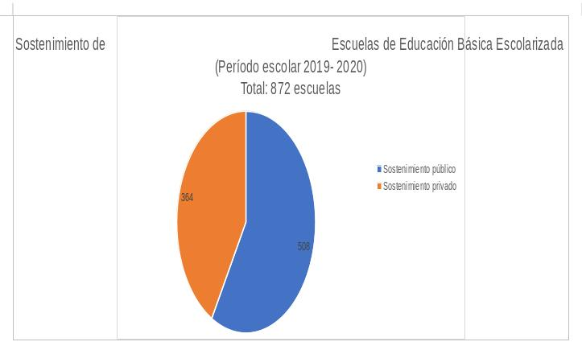
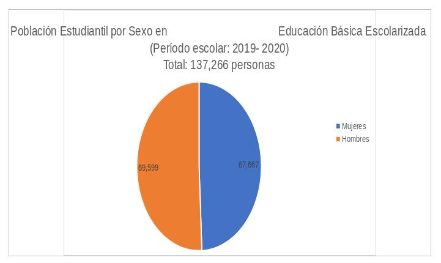
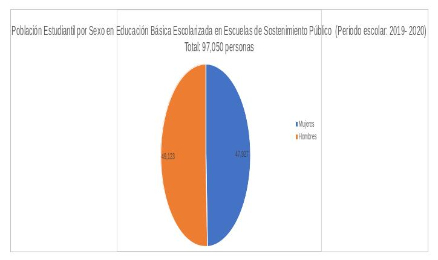
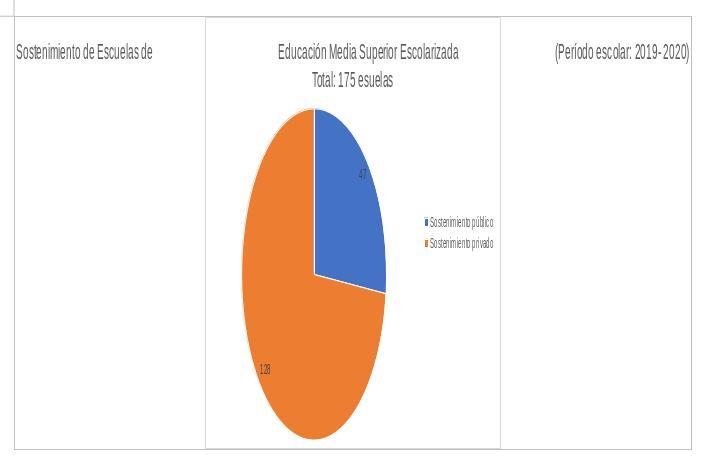
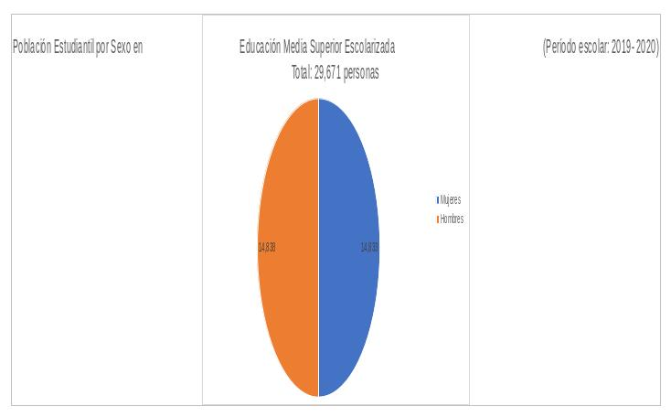
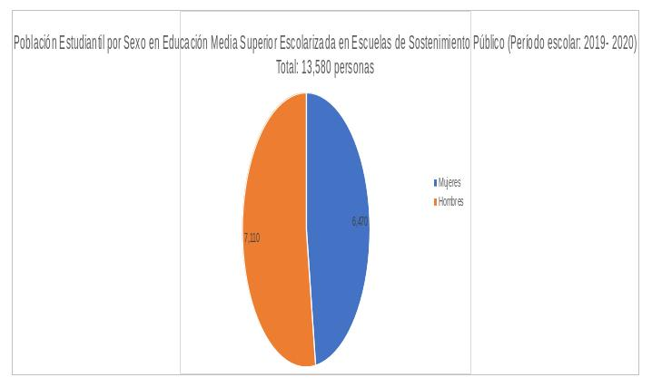
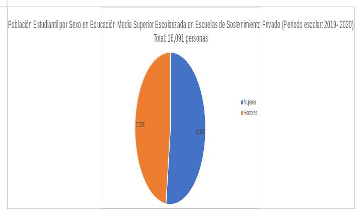

Escuchar el Programa de radio de este Tema 1ra. parte 🔊 . 2da. parte 🔊
El escenario actual de una pandemia ha obligado a modificar las rutinas de las y los estudiantes y sus familias. El alumnado que había concluido su año escolar anterior en un formato a distancia, con clases a través de la televisión, enviando y recibiendo tareas en redes sociales y estableciendo videollamadas en diversas plataformas, inician este ciclo escolar bajo las mismas condiciones.
No es necesario profundizar sobre porque se han tomado estas decisiones, pues la enfermedad de la Covid-19 nos ha colocado a prueba a todas y todos. Después de semanas de resguardo, hemos recobrado poco a poco nuestras actividades habituales, pero ahora bajo nuevas reglas de limpieza y sanitización, y en su caso de prevención, como ocurre en esta modalidad educativa a distancia.
Sin embargo, diversos investigadores han señalado las posibles complicaciones que entraña un modelo educativo de estas características, por ejemplo, el doctor Fernando Escalante Gonzalbo, académico de El Colegio de México, advierte que “la necesidad de mantener a los niños en casa, y continuar de alguna manera la educación en casa, reduce a la escuela al ámbito privado, es decir al ámbito de la desigualdad”. Y añade que “en un salón de clases puede atenuarse un poco la diferencia que hay entre una familia y otra”.[ CITATION Esc20 \l 2058 ]
Entre tanto, Blanca Heredia, profesora investigadora del Centro de Investigación y Docencia Económicas, señala que la escuela a distancia “es una opción mucho menos buena que la educación presencial (…) porque priva a educadores y educandos de los nexos sociales y afectivos de carácter presencial”.[CITATION Her20 \l 2058 ]
En este contexto, el municipio de Torreón registraba al período escolar 2019- 2020, 872 escuelas de educación básica escolarizada (preescolar, primaria y secundaria), siendo 508 (58.25%) de sostenimiento público y 364 (41.74%) de tipo privado. La población estudiantil ascendió a 137,266 personas, desagregada en 69,599 alumnos y 67,667 alumnas.[ CITATION Dir20 \l 2058 ]

Gráfica 1. Fuente: Elaboración propia, con datos del Sistema Interactivo de Consulta de Estadística Educativa de la Dirección General de Planeación, Programación y Estadística Educativa.

Gráfica 2. Fuente: Elaboración propia, con datos del Sistema Interactivo de Consulta de Estadística Educativa de la Dirección General de Planeación, Programación y Estadística Educativa.
De lo anterior, se desprende que 97,050 personas se encuentran en la educación básica de sostenimiento público, divididas en 47,927 alumnas y 49,123 alumnos. Por su parte, el estudiantado de escuelas de control privado representaba a 40,216 personas, divididas en 19,740 estudiantes mujeres y 20,476 estudiantes hombres.[ CITATION Dir20 \l 2058 ]

Gráfica 3. Fuente: Elaboración propia, con datos del Sistema Interactivo de Consulta de Estadística Educativa de la Dirección General de Planeación, Programación y Estadística Educativa.
Gráfica 4. Fuente: Elaboración propia, con datos del Sistema Interactivo de Consulta de Estadística Educativa de la Dirección General de Planeación, Programación y Estadística Educativa.
Entre tanto, para la educación media superior escolarizada, considerando los niveles de bachillerato y profesional técnico, se reporta la existencia de 175 instituciones, 47 de ellas de sostenimiento público (26.85%), y 128 de tipo privado (73.14%) con una población total de 14,833 alumnas y 14,838 alumnos, en total, 29,671 alumnas y alumnos.[ CITATION Dir20 \l 2058 ]

Gráfica 5. Fuente: Elaboración propia, con datos del Sistema Interactivo de Consulta de Estadística Educativa de la Dirección General de Planeación, Programación y Estadística Educativa

Gráfica 6. Fuente: Elaboración propia, con datos del Sistema Interactivo de Consulta de Estadística Educativa de la Dirección General de Planeación, Programación y Estadística Educativa
En una separación más específica, el estudiantado de bachilleratos y/o profesionales técnicos escolarizados de sostenimiento público es de 13,580 personas en total, dividas en 6,470 alumnas y 7,110 alumnos. Entre tanto, la educación media superior escolarizada de tipo privada, suma una población de 16,091 personas, de las cuales 7,728 son hombres y 8,363 son mujeres.[ CITATION Dir20 \l 2058 ]

Gráfica 7. Fuente: Elaboración propia, con datos del Sistema Interactivo de Consulta de Estadística Educativa de la Dirección General de Planeación, Programación y Estadística Educativa.

Gráfica 8. Fuente: Elaboración propia, con datos del Sistema Interactivo de Consulta de Estadística Educativa de la Dirección General de Planeación, Programación y Estadística Educativa.
Las cifras anteriores nos permiten vislumbrar la magnitud de la población local que experimentará este fenómeno inusitado. El impacto en sus vidas probablemente será permanente o de gran duración, por lo que será necesario el diseño e implementación de políticas públicas que traten esta situación.
En el corto plazo existen varias medidas que pueden ser útiles, el Fondo de las Naciones Unidas para la Infancia (UNICEF México) recomienda a padres y madres que no traten de convertirse en maestros o maestras, sino que sean acompañantes en el proceso de aprendizaje, faciliten la designación de un lugar y momento específico para la educación a distancia, y presten atención a la salud mental de sus hijos e hijas.[ CITATION UNI20 \l 2058 ]
Para las y los adolescentes, UNICEF México les exhorta a reconocer sus emociones y a compartirlas con sus amigas y amigos.[ CITATION UNI201 \l 2058 ] Por su parte, la Organización Mundial de la Salud, ha emitido una serie de recomendaciones a la población en general, y que también pueden ser aplicables a la juventud, a saber: limitar el tiempo para escuchar o ver noticias, mantener un estilo de vida saludable y contactar a familiares y/o amistades.[ CITATION Org20 \l 2058 ]
La educación a distancia también ha contribuido a transformar diversos fenómenos urbanos, verbigracia, según estimaciones de ONU Habitat México, el programa de Naciones Unidas para los asentamientos urbanos, la movilidad se ha visto drásticamente reducida. Junto con ello, las escuelas en su calidad de espacios públicos deberán ahora garantizar el distanciamiento físico, por lo que deberán ser adaptadas y así consolidar su relación con la salud pública.[ CITATION ONU20 \l 2058 ]
En resumen, el reto de la educación a distancia no es menor, e implica una corresponsabilidad entre profesorado, estudiantado, padres y madres de familia, autoridades gubernamentales y sociedad en general.
Bibliografía
Arnold, P., Lazarte Hoyle, A., & Arredondo Ruiz, S. (Agosto de 2020). Guía Metodológica de Recuperación Socioeconómica Municipal en contexto de COVID-19 (Cuaderno Técnico) . Obtenido de ONU HABITAT: http://70.35.196.242/onuhabitatmexico/Guia-Covid-Cuaderno-Tecnico.pdf
Centro de Investigación y Docencia Económicas A.C. (2020). Profesores. Obtenido de CIDE: https://www.cide.edu/nosotros/comunidad/profesores/perfil/?id=111
Dirección General de Planeación, Programación y Estadística Educativa. (2020). Sistema Interactivo de Consulta de Estadística Educativa. Obtenido de Secretaría de Educación Pública: https://www.planeacion.sep.gob.mx/principalescifras/
El Colegio de México. (2020). Centro de Estudios Internacionales. Obtenido de El Colegio de México: https://cei.colmex.mx/es/personal-academico/fernando-escalante
Escalante Gonzalbo, F. (12 de agosto de 2020). Milenio Opinión. Obtenido de Milenio: https://www.milenio.com/opinion/fernando-escalante-gonzalbo/entre-parentesis/el-tiempo-perdido
Heredia Rubio, B. (12 de agosto de 2020). El Financiero Opinión. Obtenido de El Financiero: https://www.elfinanciero.com.mx/opinion/blanca-heredia/como-evitar-que-la-escuela-a-distancia-sea-un-desastre-total
ONU Habitat. (10 de juniio de 2019). ONU-Habitat - El Programa de las Naciones Unidas para los Asentamientos Humanos. Obtenido de ONU Habitat México: https://onuhabitat.org.mx/index.php/sobre-onu-habitat
ONU Habitat México. (30 de junio de 2020). Espacio Público y COVID-19. Obtenido de ONU HABITAT: https://onuhabitat.org.mx/index.php/espacio-publico-y-covid-19https://onuhabitat.org.mx/index.php/espacio-publico-y-covid-19
Organización Panamericana de la Salud/ Organización Mundial de la Salud. (2020). Infografía: Lidiar con el estrés durante el brote de 2019-nCoV. Obtenido de OPS: https://www.paho.org/es/documentos/infografia-lidiar-con-estres-durante-brote-2019-ncov
UNICEF. (2020). Preguntas frecuentes. Obtenido de UNICEF : https://www.unicef.org/es/acerca-de-unicef/preguntas-frecuentes#1
UNICEF México. (2020). Educación en tiempos de COVID-19. Obtenido de Unicef México: https://www.unicef.org/mexico/educaci%C3%B3n-en-tiempos-de-covid-19
UNICEF México. (2020). Salud mental de las y los adolescentes ante el COVID-19. Obtenido de UNICEF México: https://www.unicef.org/mexico/educaci%C3%B3n-en-tiempos-de-covid-19